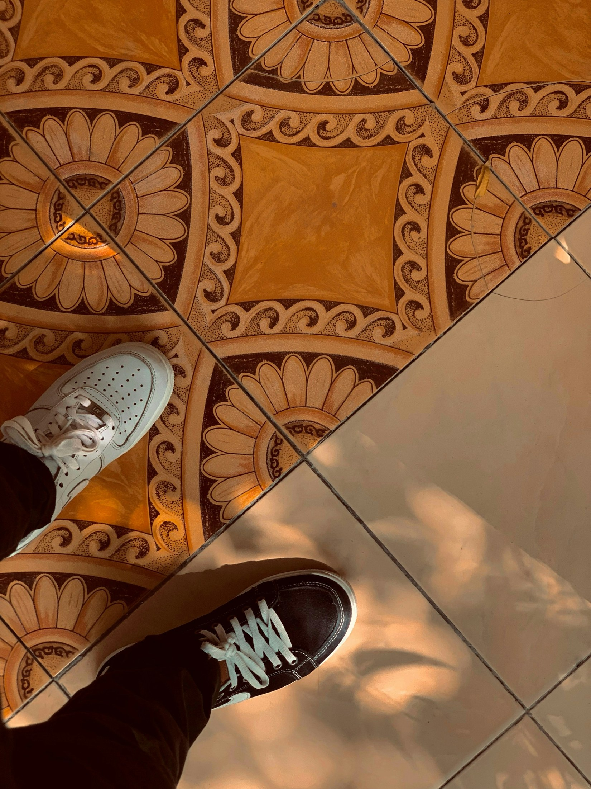
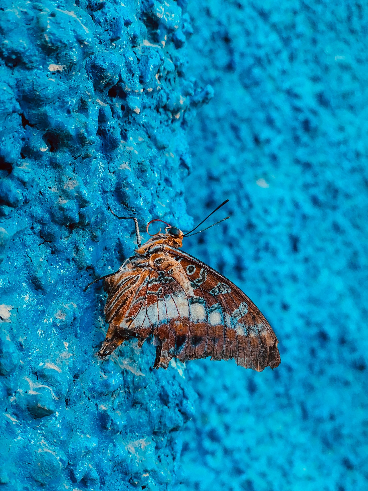
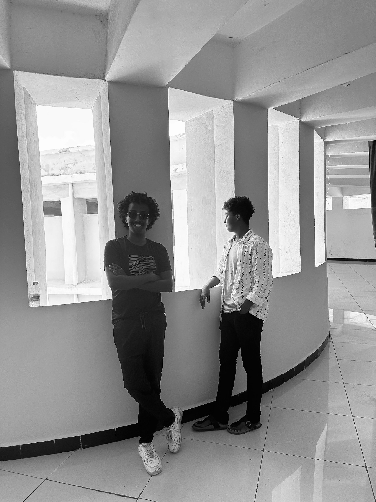

about
Abdullahi Mohamud · Uncanny Stranger
A practice of
seeing.
Artist biography
Abdullahi Mohamud, known as Uncanny Stranger, is a Somali photographer and visual creator based in Mogadishu, Somalia. His work observes everyday life through quiet moments of care, memory, movement, and survival. Through street scenes, portraits, public spaces, and intimate human gestures, he explores how people continue to rebuild meaning in ordinary places. His photography looks at Mogadishu beyond crisis, focusing instead on hospitality, family, cultural presence, urban life, and the small acts that keep communities connected. His practice is shaped by a desire to see beauty without ignoring reality, and to use images as a way of remembering, questioning, and preserving what still lives.
Between places
Born in Mogadishu, Abdullahi spent formative childhood years in Italy before returning to Somalia in 2015. Mogadishu is now home and a continuing subject of his work.
Education & perspective
He completed his secondary education at Hamar Boarding School and earned a bachelor’s degree in Information Technology at City University of Mogadishu. His background brings photography, digital creativity and technology into the same practice.
Elsewhere
-
I am Uncanny StrangerPersonal Photography Portfolio
-
I follow light and stillnessEvery frame has a pulse
-
Images shaped by patienceStories found in real places
-
Portrait StudiesPortraits
-
Street MomentsStreet Photography
-
Architecture TextureStreet Photography
-
Documentary FramesDocumentary Frames
-
Light StudiesLight and Shadow
-
Visual DiaryOngoing Series
-
-
-

-
-

-

What I look for
- portraits
- street moments
- movement
- architecture
- light studies
Selected Notes
Published Frames
- Portrait Notes Portrait selection, street study, quiet city sequence 08 Frames
- Light Journal Light study, architecture edit, monochrome detail 06 Frames
- Portfolio Editorial frame, visual diary, texture study 04 Frames
- Street Archive Street sequence, documentary note, soft light frame 12 Frames
- Mogadishu Diary Cinematic series, night walk, frame study 04 Frames
- Visual Notes Portfolio note 10 Frames
- Texture Study Featured photo essay 08 Frames
- Frame Log Portfolio note, Special Mention 12 Frames